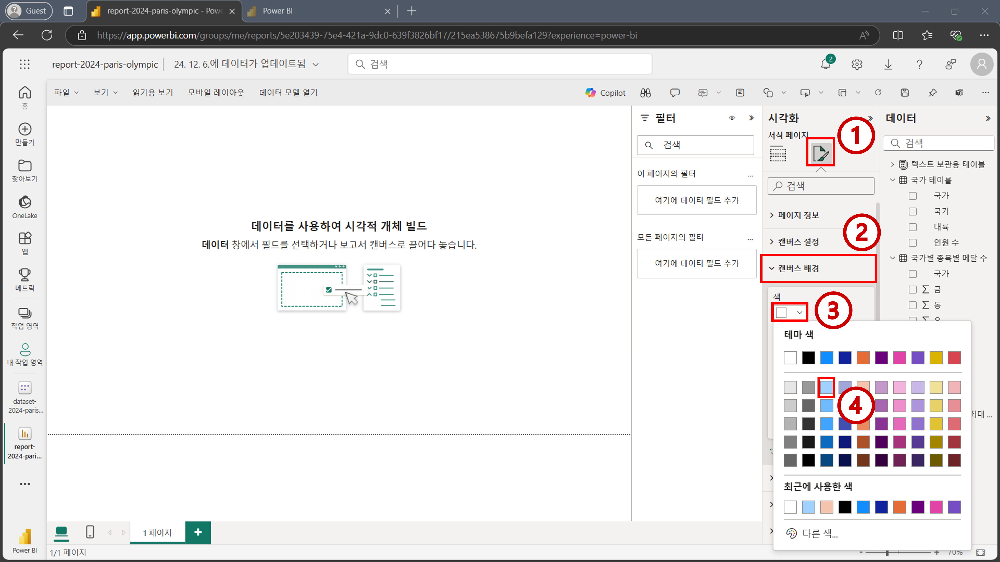
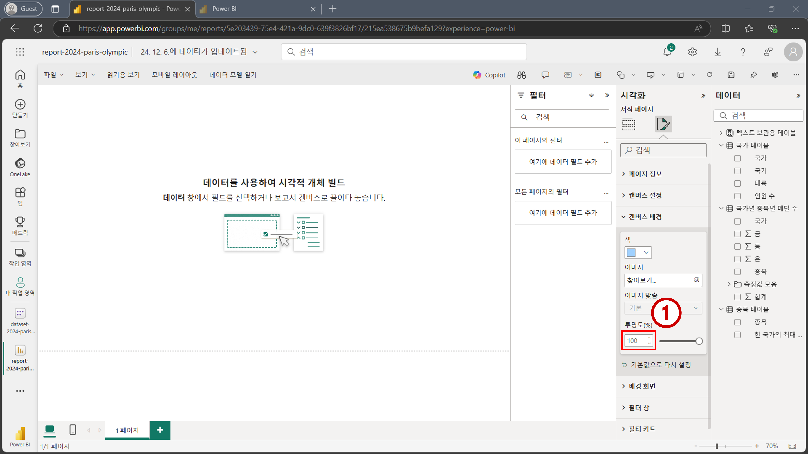
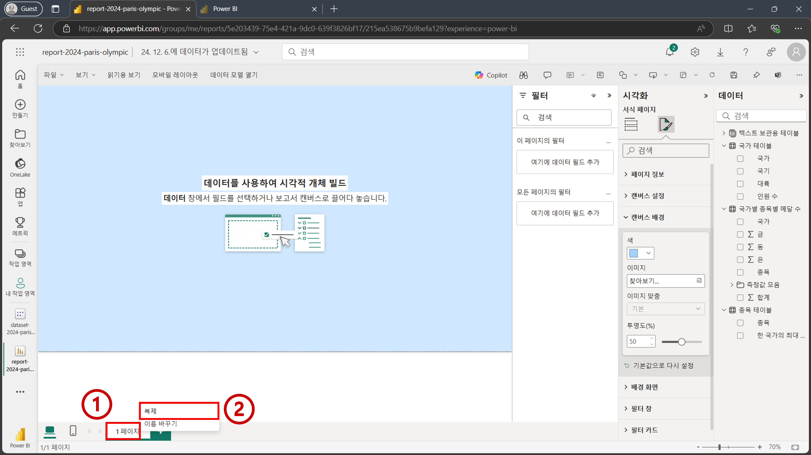
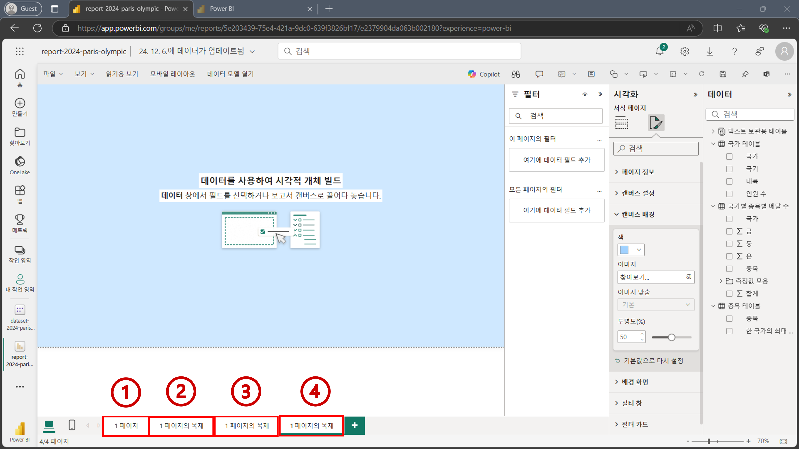
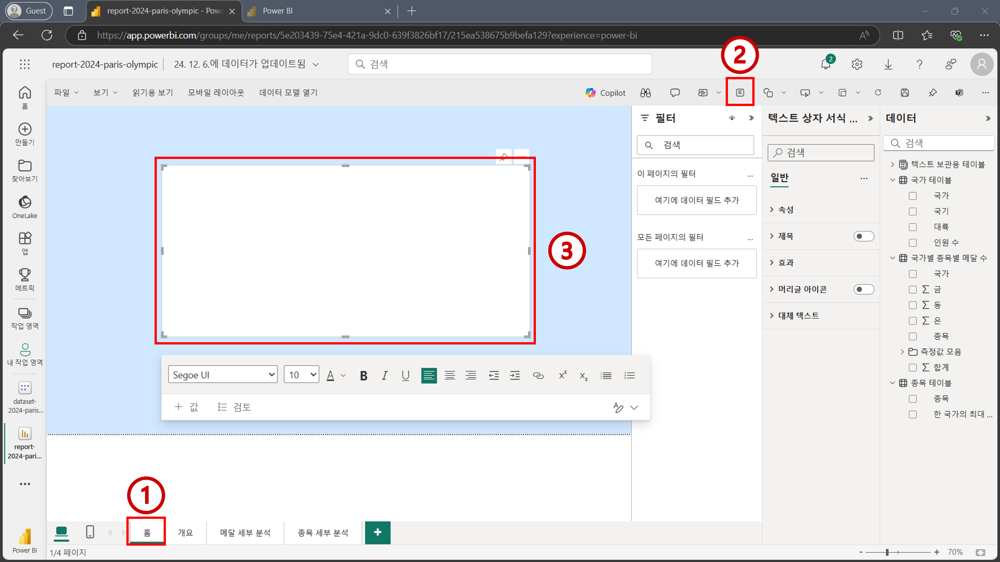
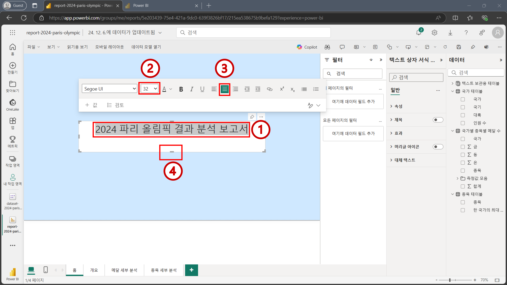

STEP 04: 데이터 시각화 part1#
이제 본격적으로 데이터 시각화를 진행해보겠습니다.
4.1 캔버스 배경색 변경#
먼저 주어진 캔버스의 배경색을 바꾸기 위해 아래 이미지 순서에 따라 진행하여 캔버스 배경색을 연한 하늘색으로 변경합니다. 
색을 선택하더라도 처음에는
투명도가100로 되어 있어서 색이 표시가 되지 않습니다. 아래 이미지를 참고해투명도를50으로 편집합니다. 
4.2 페이지 복사하기#
여러 개의 페이지를 만들기 위해 하단의
1 페이지메뉴를 우측 마우스로 클릭한 뒤복제버튼을 누릅니다. 해당 과정을 반복하여 총 4개의 페이지를 만듭니다. 4개의 페이지가 만들어 졌으면 각각의 페이지명을 더블 클릭하여 페이지명을 수정합니다. 페이지명을 각각 다음과 같이 변경합니다:
홈,개요,메달 세부 분석,종목 세부 분석
4.3 홈 페이지 구축하기#
홈 페이지를 구축하기 위해 하단에
홈버튼을 클릭하여홈페이지로 이동합니다. 그리고 아래 이미지의 2번을 참고해 우측 상단에 있는텍스트 상자버튼을 클릭합니다. 텍스트 상자가 캔버스에 추가되면 적절한 크기로 조정한 후 상자를 캔버스 중앙에 위치시킵니다. 
Tip
Power BI Service에는 시각적 개체를 배치할 때 사용할 수 있는 기능들이 아직까지는 상대적으로 빈약합니다. Power BI Desktop을 사용하면 보조선 기능, 개체간 정렬 기능 등등 보조 기능들을 활용하여 시각적 개체 배치에 도움을 받을 수 있습니다.
텍스트 상자에
2024 파리 올림픽 결과 분석 보고서를 입력합니다. 폰트 사이즈를 32로 하고 좌우 가운데 정렬을 적용합니다. 그리고 나서 텍스트 상자를 알맞은 크기로 조절합니다. 
Important
텍스트 상자는 텍스트를 좌우 정렬 해주는 기능은 있지만 위아래 정렬 해주는 기능은 없습니다. 추후 실습에서는 위아래 정렬 기능이 자동으로 탑재되어 있는 카드 시각적 개체를 활용할 예정입니다.
축하합니다. 데이터 시각화 첫번째 파트를 모두 완료하셨습니다.